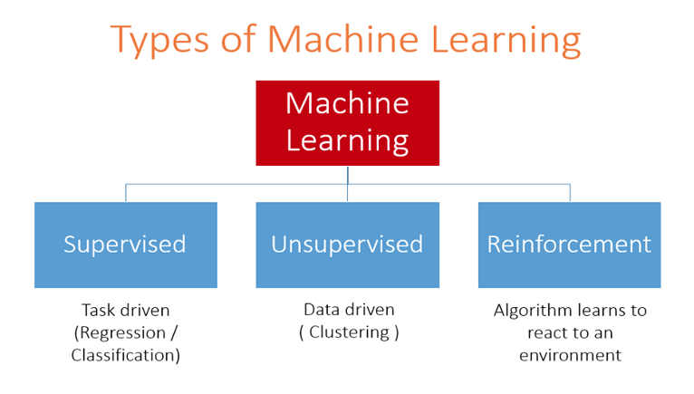
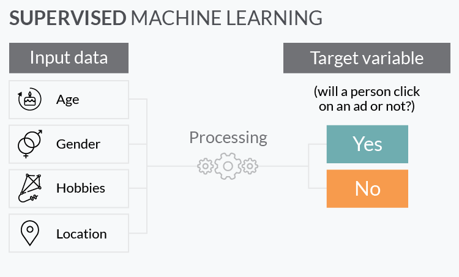
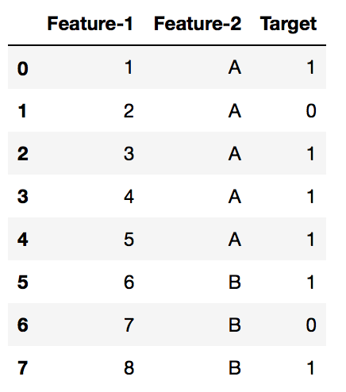

Keyboard shortcuts:
N/SpaceNext Slide
PPrevious Slide
OSlides Overview
ctrl+left clickZoom Element
If you want print version => add '
?print-pdf' at the end of slides URL (remove '#' fragment) and then print.
Like: https://ProgressBG-ChatGPT_and_ML-course.github.io/...CourseIntro.html?print-pdf
Machine Learning basics
Created for
Iva E. Popova, 2016-2025,

Introduction to Machine Learning
What are ML models?
- Definition
- Machine Learning is a subset of AI that focuses on building systems that learn from data.
- How they learn?
- Instead of explicit programming rules, ML models find patterns and relationships in data to make predictions or decisions.
- Key Components
- Data (Training Set), Model (Algorithm), Evaluation (Testing).
Machine Learning - Definitions
"Machine learning is a field of study that gives computers the ability to learn without being explicitly programmed."
Machine learning (ML) is a field of study in Artificial Intelligence concerned with the development and study of statistical algorithms that can learn from data and generalise to unseen data, and thus perform tasks without explicit instructions.
ML vs Traditional Programming
- Traditional Programming
- Data (Input) + Program (Rules) = Result (Output)
- Machine Learning
- Data (Input) + Result (Output) = Program (Model)

Algorithm and Model in ML - concepts clarification
- ML Algorithm
- A set of mathematical rules and procedures used to find patterns in data and build a model.
- ML Model
- The output of an ML algorithm after training on data.
- It represents the learned patterns and can make predictions on new data.

Types of Machine Learning
{kind=link}
Supervised Learning Basics
Supervised Learning Basics
It's all about training

Overview
- Supervised ML algorithms are the most used algorithms in practice.
- Supervised ML is when we have historical data with mapped input => output pairs and we use an algorithm to learn the mapping function from the input to the output.
- Input data are called features or input (free) variables (X)
- Output data is called target or dependent variable (y)  
{kind=link}
{kind=link}
Overview
- The goal is to approximate the mapping function: $ {Y = f(X)} $, so well that when we have new input data (X) we can predict the output variables (Y) for that data.
- The model is trained until it can detect the underlying patterns and relationships between the input data and the output labels, enabling it to yield accurate labeling results when presented with never-before-seen data
- The job of modeling algorithm is to find the best mapping function, such that will minimize the error on prediction.

Problems that solves
- Two main problems categories:
- classification
- predicting a discrete class label output for an example.
- example: determining if an email is spam or not
- regression
- predicting a continuous quantity (value) output for an example.
- example: predict the price of a house
- So Why Is It Called Regression Anyway
Scikit-Learn & Examples
Scikit-Learn & Examples
Introduction to scikit-learn
- What is scikit-learn?
- A robust and simple tool for data mining and data analysis in Python.
- Key Features
- Built on NumPy, SciPy, and matplotlib.
- Unified API:
estimator.fit(X, y),estimator.predict(X).
Simple Regression Example
- Linear Regression
- Predicting a continuous target variable.
from sklearn.linear_model import LinearRegression
import numpy as np
# Data
X = np.array([[1], [2], [3], [4]])
y = np.array([2, 4, 6, 8])
# Model
model = LinearRegression()
model.fit(X, y)
# Prediction
print(model.predict([[5]])) # Output: [10.]
Simple Classification Example
- Logistic Regression (Binary Classification)
- Predicting a class label (0 or 1).
from sklearn.linear_model import LogisticRegression
# Data (Features: [Age, Salary], Label: Bought)
X = [[20, 20000], [25, 30000], [40, 60000], [50, 80000]]
y = [0, 0, 1, 1]
# Model
clf = LogisticRegression()
clf.fit(X, y)
# Prediction
print(clf.predict([[45, 70000]])) # Output: [1]
Model Evaluation
Model Evaluation
Evaluation Metrics
- Accuracy
- Ratio of correctly predicted observations to the total observations.
- Confusion Matrix
- A table used to describe the performance of a classification model (TP, TN, FP, FN).
- Precision
- Ratio of correctly predicted positive observations to the total predicted positives.
- Recall (Sensitivity)
- Ratio of correctly predicted positive observations to the all observations in actual class.
Homework
Homework
- The tasks are given in next file
- You can copy it and work directly on it. Just put your code under "### Your code here".
These slides are based on
customised version of
framework